⊹˚. ♡ welcome to my blog! ♡ .˚⊹
����/17/female
last login: 4/15/�7
 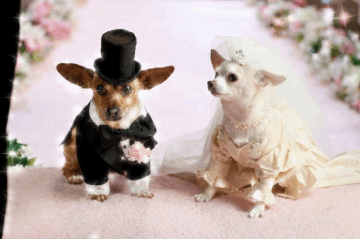
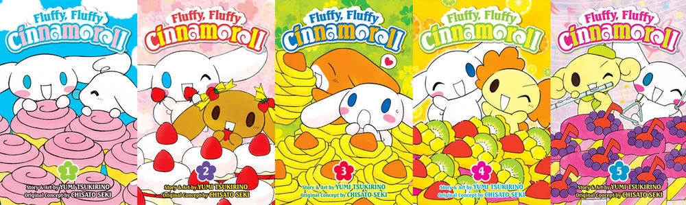
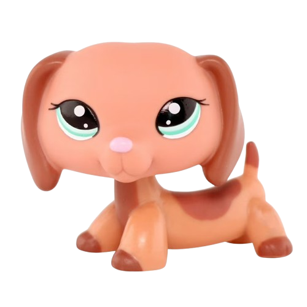
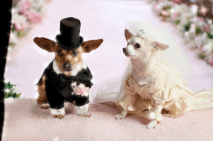
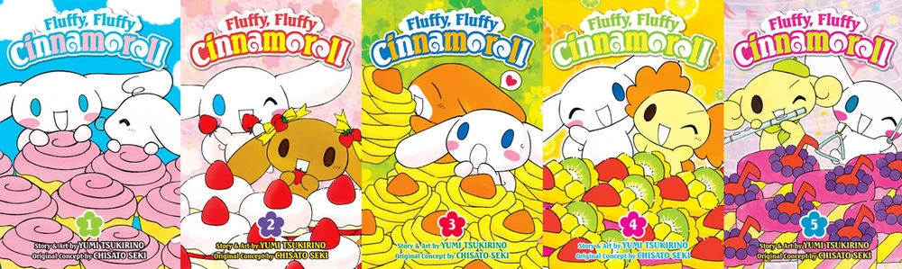
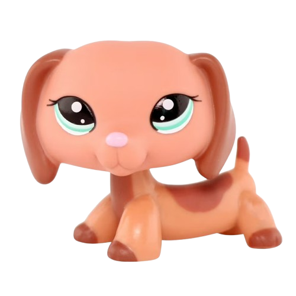
 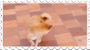
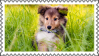
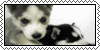
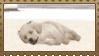
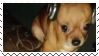
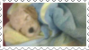
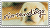
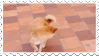
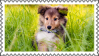
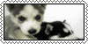
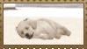
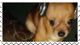
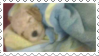
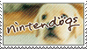
11/28/�6:
I'm always so lonely at lunch. I know I left for a reason but I don't know whether or not I hate being alone in a group of people or alone
on my own more. I guess thats why I made this blog, so at least I could talk- somewhere.
I don't really know what to talk about though. I like dogs.
Maybe I can just talk about dogs. I really like whatever breed the "crusty white dog," is. The one in my family is a maltese toy poodle mix I think?
I don't really know. She's my baby though. Whenever things get hard I can always just go to her bed lay there with her. Sometimes she'll lay next to me
and if I'm on my back she will lay on top of me.
My mom hates her though. She says shes a brat, she acts like a cat. That part always frustrated me.
Why is it a cat trait if a dog is doing that? Like shouldn't it be a cat thing if only cats do that???? The cat thing in question is not being
the 100% most eager to please 100% of the time. I just think its traits cats are allowed to have but dogs aren't. It feels really unfair. Really
really unfair. I don't think shes a bad dog just bc she doesn't sumbit to you entirely, she's just as living as you are. Why do cats get to be
imperfect but dogs can't. I don't get it at all.
My mom adores her brother, her perfect brother, but not my baby. Its not like hes even smarter than her, he just
is kinda dumb enough to not question what he can get away with or not.I find her bratty attitude endearing and shes BARELY a brat she listens when you give her
a direct order she just doesn't always come the first time you call her. But can you blame her? Maybe she doesn't want to be pet right now- It makes me sad. I think
shes a good girl shes a good dog- she comes to comfort me when I cry and she shares her bed with me- what else would you want from a dog- SHES NOT EVEN LIKE PEEING
IN THE HOUSE OR STUFF LIKE THAT. She just isnt perfect.
...
I wish more people loved her for her and not for how obedient she is. Its unfair.
Blegh... Its fine though I'll give her enough love to make up for everyone else. I love you □□□□□□□.
 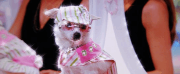
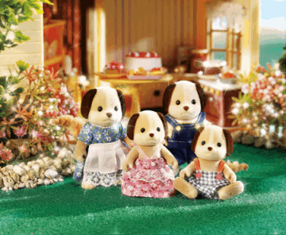
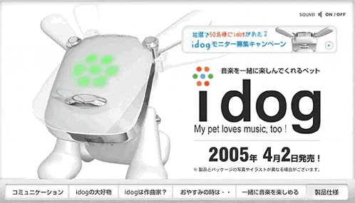
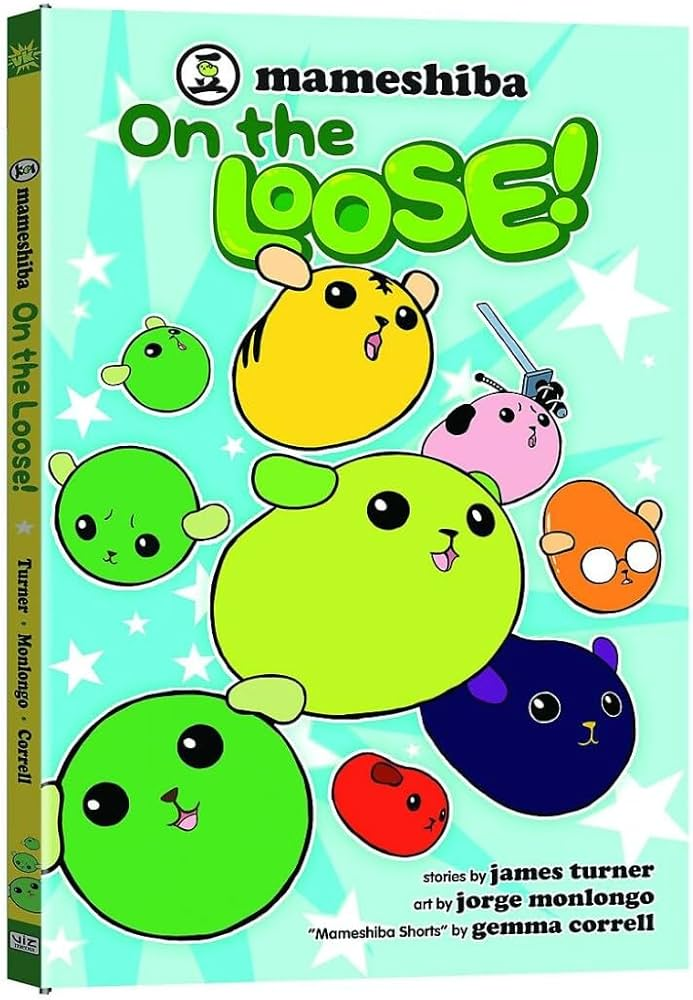
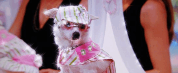
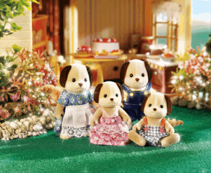
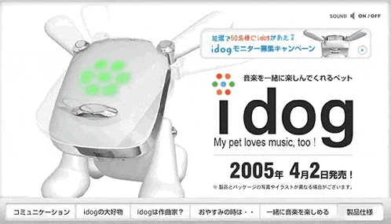
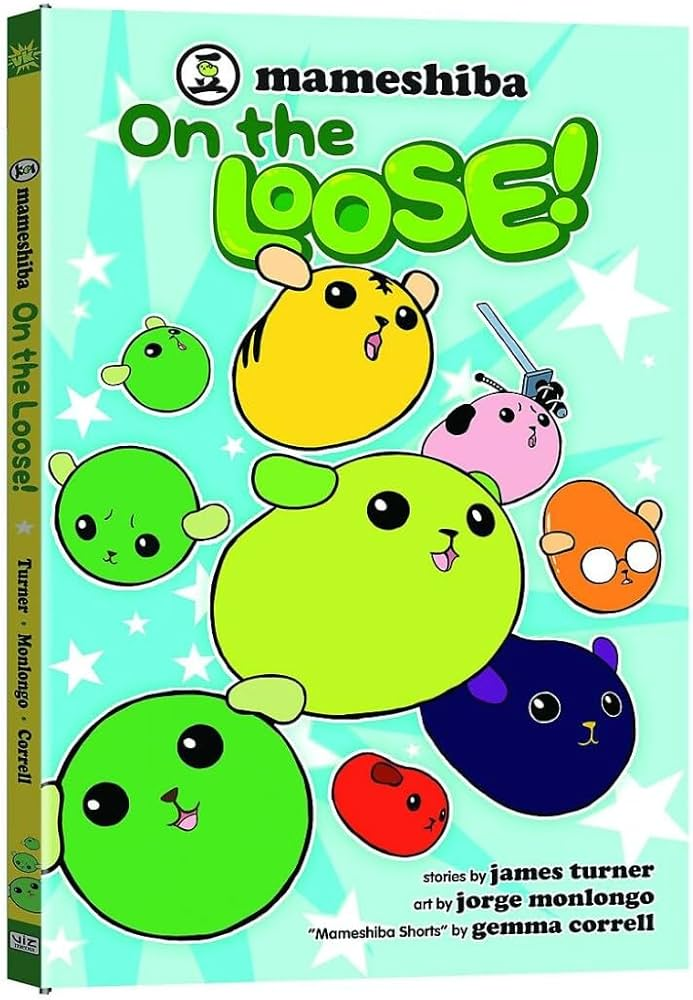
1/30/�7:
I feel really weird today. It feels like I've always remembered something being wrong with me but it feels like it's always been getting worse.
I don't know how to stop it. I feel like its somehow my fault but maybe thats just my desire to be able to actually fix things. I don't know. I don't want
to think about it though. I'd rather just talk more about dogs. I read the word bitch before I ever heard it, at least how I remember it at least.
I don't remember most of my childhood but I do remember seeing bitch for the first time. I was reading a book about dogs. I think it was about golden retrievers?
That or cavalier king charles spaniels- honestly it might be the spaniels- But it was like a dog care book and the topic of breedings and puppies came up and they
used the word bitch to describe a female cavalier king charles spaniel (or golden retriever now I kinda think it was the retriever.) I knew this was a bad word
at this point so I was extremely ?????
I don't know how I found out it also meant a female dog. Im assuming I either asked my parents or looked it up...
probably asked my parents because I dont remember having a dictionary to use yet and I didn't have access to the internet. Bitch. Thats something I think about a lot actually.
Why is bitch an insult. I mean I get why its an insult, humans dont like being compared to other animals but why did we choose the dog. Like I thought they were supposed
to be man's best friend? I guess "pussy" is also an insult but whether or not the word we use for cat has the same origins is debated. Bitch is just female dog though. Bitch. I
can't think of another animal whose name we use as an insult.
En espanol perra tambien es un insulto... I dont think we like dogs nearly as much as we claim to do.
We like obedience, subservience, and loyalty, but not dogs.
I like dogs though.
![Chart with images and descriptions of all the mameshiba characters as listed
,Edamame:Full of curiosity and loves to travel around the world seeking adventure
,Black bean : Has a tendency to stare and likes to hide
,Natto : This sweaty bean is sticky too - in that it sticks to its convictions.
,Peanut: Likes to try new things, and always thinks outside the shell.
,Green peas: Like peas in a pod... they hate to be alone, and cannot ever be apart!
,Fava bean: Is laid-back and unflappable.
,Chickpea: A bit naughty and a bit selfish. Hates to be alone.
,Lentil: A math and computer whiz. Keeps a close eye on things.
,Tiger bean: Self-centered and a bit forgetful when it comes to returning items.
,Chili bean: Passionate and cheesy, this bean is on the lookout for romance.
,Cocoa bean: Is naive about most things, and believes just about anything!
,Almond: Really uptight, but good thing it has its friend Cocoa Bean!
,Red bean: Very sharp, speedy, and extremely polite - this bean is quite popular.
,Cashew nut:Twisted and tends to say things that alienate others.
,White soybean: A true poet with a pure soul. Has never doubted a single bean. Ever.
,Black soybean: This athletic bean's willpower is as strong as its rock hard abs.
,Soybean: A compulsive worrier & health nut that likes to give unsolicited advice.
boiled bean Compassionate and always willing to help others. Looks fresh!
,Pistachio: This reclusive bean doesn't say much, and tends to hide in its shell.
,Sword bean: Is known for its honesty and loyalty. Just like a Samurai warrior!
,Coffee beans: They give great advice, and are always composed.
,Sweet beans: They are old and wise. Just like your grandparents!
,Jelly beans:They are from the USA and don't speak Japanese very well...
,The scream: Is a complete mystery. Has never really been seen by any bean.](dogs/mameshiba.jpg) 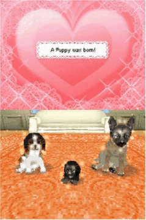
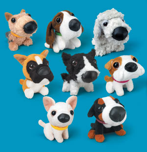
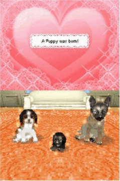
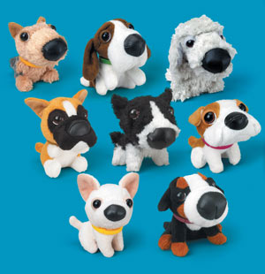

4/15/�7:
I cant think straight anymore I just want to sleep in bed with my dog. I dont think things every really get better than this. Im sick of it.
Im really sick of it. I feel like day by day I get futher and further than being human. I dont know if its me or the world telling me this.
Its hard to even type now. I dont know whats happening. I dont know whats happening. I dont know whats happening. I dont know whats happening.
I dont know whats happening. I dont know whats happening. I dont know whats happening. I dont know whats happening. I dont know whats happening.
...
I dont know if I have a favorite breed of dog. I think I like most of them. BESIDES FLAT FACED DOGS. Not that I think every flat faced dog should
die but I think their breeders should get surgery to have their bodies rearanged to have the same features. So they can then also suffocate.
And have one million health issues. Its also not even that cute they look like theyre suffering. Im sorry especially pugs. The wrinkles are not appealing
at all they look- wrong- Maybe I just see the same uncanny valley dogs get from pugs. Some people act like normal dogs are bullies for not liking pugs or
french bulldogs but how would you feel seeing a person whose nose is in their face and eyes are permanently wide. I bet that sounds scary. I
dont blame the dogs. Theoretically theyre supposed to be cute because the lack of maws and wide eyes make them more babylike but I dont see it. Imagine being
a dog person. A bitchgirl. A bitchgirl. A bitchgirl. A bitchgirl. A bitchgirl.
I guess I relate to that. A bitchgirl. Is it contradictory to be a bitchgirl?
Every bitch is a girl but is every girl a bitch? Maybe I hit the uncanny valley of human and animal and thats why everything that has happened has happened. Or
maybe people forced me into that. Im tired. Im really tired. I cant do this anymore. It feels like im just clawing onto the last bits of my humanity. clawing. clawing.
clawing. clawing. i dont think i can hold onto anything. only beg to be allowed to stay. i dont know whats so wrong with me everything just feels fuzzy now. maybe if i
sleep ill feel better.
 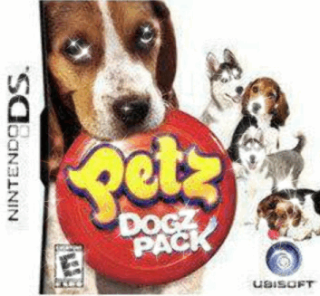
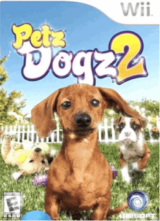
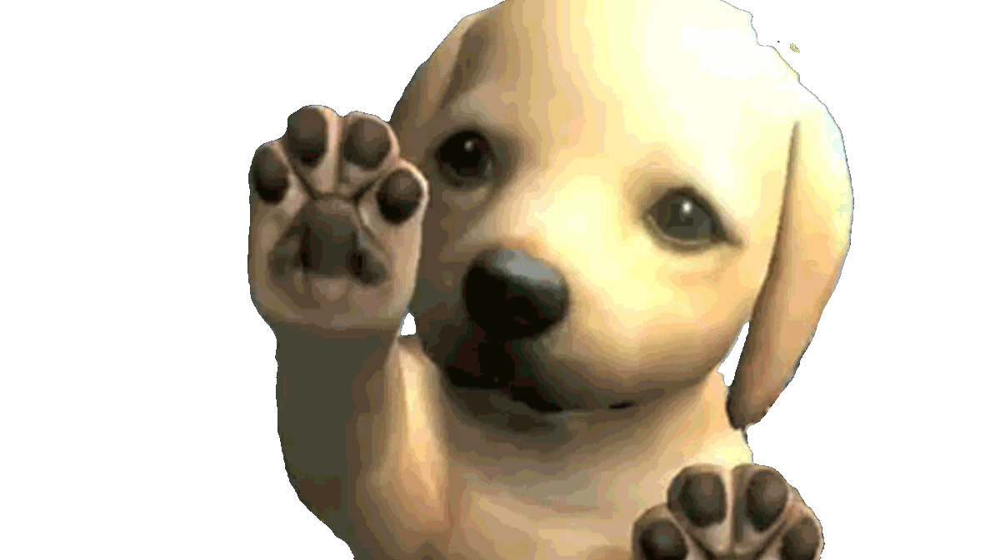
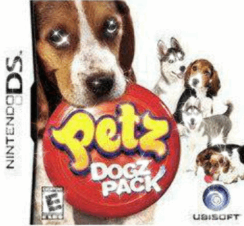
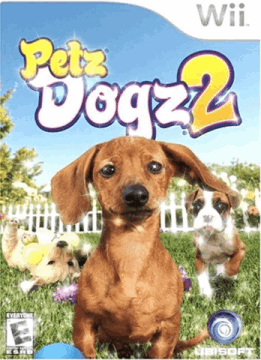
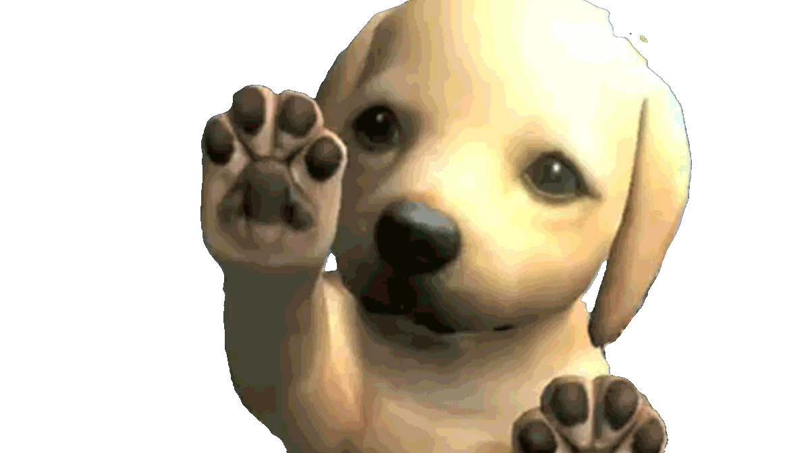